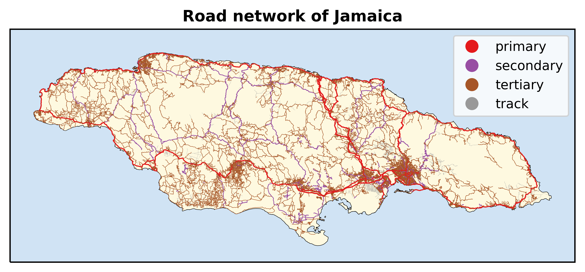

Example¶
This small example will show how to estimate the length of the roads in a single country.
The first step is to load the function single_country from the length file.
from length import single_country
import os
%matplotlib inline
The single_country function requires a base_path, the country’s name and a path string to the osm file of the continent. We will first identify the base_path. The two dots indicate that the base_path redirects us to the parent directory.
base_path = os.path.join(os.path.dirname("__file__"),'..')
For this example, we will use Jamaica. The input for a country is its ISO3 classification.
country = 'JAM'
continent_osm = os.path.join(base_path,'osm_continent','%s-latest.osm.pbf' % ('central-america'))
And finally, we run the code.
single_country(country,continent_osm,base_path,overwrite=False,savefig=True)
The code will indicate if the script has started. Any errors will be printed as well.
JAM started!
The final output produces the length (in km) of the five road categories.
| JAM | |
|---|---|
| roads | |
| other | 73.719033 |
| primary | 910.035749 |
| secondary | 837.407983 |
| tertiary | 8483.579909 |
| track | 1130.414847 |
And, if the option Report is set to False, a figure with the roads of the selected country will be plotted and saved to the Figures directory.
